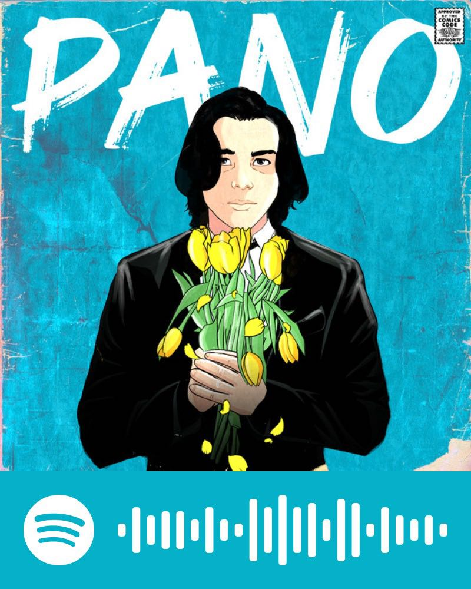

Nahuhulog Na Sayo - sa lyrics pa nga lang halata na kung bakit kita natatandaan tuwing nagpaplay tong kanta na toh eh.
Yung pagdinig ko palang ng pangalan mo kinikilig na ko, yung notif mo, yung galawan mo, yung boses mo. Basta kapag ikaw
naalala ko, napapangiti nalang ako dito ng wala sa oras. Di ka ba naaawa sakin? Lahat nalang ng ginagawa mo sakin,
naano yung puso ko pls haha. Sa pagtagal padin ng panahon, sayo at sayo lang ako nahuhulog ng ganito.
Love Like You - I never thought na may magmamahal sakin ng ganito. Aswell as magmamahal ako ng kagaya mo, I'm not sure
kung anong nagustuhan mo sakin eh, ano nga ba? I always thought na I'd be the type that would always experience love that
would be impossible na mahalin ako pabalik, sinasabi mo na I'm someone special to you, pero what is so special about me?
Hays, kahit hindi ko alam kung ano nga ba, ever since you said that you liked me back, I've been trying to love like how you love me,
we're both still learning about this anyways, it feels nice learning new things with you. Especially love.
:) - Nakita ko nga lang toh while observing your dc status and started listening to it more bcs of that, ang ganda pala ano?
This song reminds me of how happy I am while being inlove with someone, kasi kahit sino pa before
na nagustuhan ko, none of them made me feel loved more than you did. You've been stuck on my mind everyday ever since
narealize ko na I really am inlove with you and it's the happy kind of love, the love that I have rarely experienced from anyone at all.
You were the reason I started believing in love more than I have ever had before.
Pano - This song makes me reminisce the November phase we had, the silence for a week between us.
The time na I was half umaasa, half sumusuko na haha. The convincing na "hala ginanon lang ako ni win? pero nagsabi siya na hndi naman nya ako iiwan?"
the first week of you disappearing, ewan ko ba kung manhid ka or what pero pinapahalata ko na sa fb na ikaw ang namimiss ko eh.
kasi bigla ka namang nawala, no explanation, nothing. Sabi ko hindi na ko magiging marupok sayo and I'll start moving on, I'll start studying first.
Yun nga yung nangyari nung una, pero hindi padin mapigilan yung mga luha na naubos every night. Pero the thought na you left me still lingers in my mind.
I did so many thing to distract myself pero nung bumalik ka, dun ko narealize na there really wasn't any letting go of my feelings for you.
Delikado na talaga ako pagdating sayo eh.

Valentine - I haven't felt genuinely admired or loved by anyone (sounds dark pero eh). You're the
first one to ever like me back and it's scary because everytime you say "I love you", I feel like I have someone to lose now. I've never believed anyone when
they call me pretty and stuff so I usually just joke around, pero pagdating sayo I legit try to think of a response
I've fallen for you and the moment that I did, surprised me. I've never thought someone as unexpected as you, would be the person I would be falling for.
Every "I love you", I can feel my heartbeat going faster, my eyes sparkling, and my mind suddenly feels relaxed the moment you say it.
Time really flies fast when spent with the right person, buti nalang ano?
Maybe Maybe - I placed the imaginary friendzone between us even tho I knew well that I liked you
more than a friend. I knew you didn't like me back before so I threw away the idea of confessing to you. The only chance I'd get of you
exchanging mutual feelings is if it's platonic ones, so I just made it that way. I was supposed to admire you from a distance and a boundary.
Habang tumatagal, I wanted you to be aware of how amazing you actually are, how you can just easily fix my mood with one notification.
There was no point in confessing before, I would've just gotten hurt instead of you liking me back. I waited for the moment, and did it. And here we are now.
Dinamalayan - My feelings for you were the least expected to be turned into romantic. This song
perfectly describes how I feel around you. Kahit the thought of you can make me smile ng hindi ko namamalayan.
Time stops whenever we make eye contact and my mind starts panicking because wala akong masabi sayo.
Kung yung nararamdaman ko sayo hindi ko namalayan na nandun, mas lalo na nung napansin kong nakangiti ka rin sa akin.
Minamasdan kita tuwing nagsasalita ka lang infront of me noong nagmeet-up tayo before, ang daldal mo eh, naano talaga ako ahaha..
THE SHADE - This reminds me of the time na nilagay mo yung lyrics neto sa about me mo sa discord hehe.
"I would love to be stuck to your side", relatable, I wanted to freeze the moment nung bday mo just so I could stay
by your side a little longer. Your presence is just so comforting kasi my mind wasn't processing the moment during that time.
If only you didn't leave so soon, I would've actually processed and enjoyed the moment at its finest hays.
Yakap - Pangalan mo palang nababanggit sakin araw araw, lagi nalang ako nanghihina at nahihiya.
Each time na nakita kita, nagtitiis lang ako and nagbubuild up ng courage para mayakap ka. Ewan ko ba pero
yakap mo na ngayon ang lagi kong ninanais, lalo na kapag malamig yung panahon. Lagi nga akong niyayakap nung
classmate ko pero wala, ikaw lang naman gusto ko makayakap kahit isang beses lang. Haha, pero till now wala padin akong lakas ng loob.
Di ko talaga kaya, pagtingin ko palang sayo nakakapanghina na eh.
Ikaw Lang - Your eyes shine like the stars at night, ang ganda talaga titigan. Nakakamangha talaga
yung pagtingin mo sakin, di ko talaga inakala na mahuhulog ka rin sa akin. I can reassure you na ikaw lang po talaga
ang iniibig ko till now and till how far we could go. Iibigan kita kahit gano ka pa katagal mawala kasi I'm sure sakin at sakin
ka parin babalik, may tiwala ako sayo na hindi basta basta masisira just because you disappeared for a few days.
Mawala ka man for a while, pagbalik mo, ikaw lang ang taong makakakuha ng nararamdaman ko.
Pasilyo - Kinikilig talaga ako tuwing nagpaplay to eh, wala naalala lagi kita.
Tuwing nagpaplay toh sa school, I just look at my friend then just talk about how much I miss you.
You have me hooked unto you without even having any idea of it, everytime na bumabanat ka sa umaga, this song
is coincidentally the one playing all the time, so I legit feel weak by every single thing you say.
Wdym need ko ng kape eh pwede namang yung mga banat mo nalang? Hehe, Ikaw at ikaw lang ang nakakapaganito sakin.
Ikaw lang kasi di naman ako napayag kung iba pa.
Paninindigan Kita - Yung oras na hindi ka makapaniwala na may nagkakagusto sayo, you couldn't understand why
siya nagkakagusto sayo. You have so many likable traits about you, pero siguro kapag nilista ko, mananahimik ka nanaman.
I know we don't really have any kind of label, pero paninindigan kita whatever you decide on, I'll still continue
chasing these feelings for you. I'll love you like I'm still chasing you to like me back, to notice me, and to be with me.
Tuwing lumalapit ka, nawawala talaga angas ko even if tinatry ko pang itago. Matagal na yon nawala sakin, sayong sayo na ko.
An Art Gallery Could Never Be As Unique As You - Everywhere I go, it's only you that I look for in the crowds of
different places I've been, hoping to accidentally bump into you. I keep seeing these other people that look like you,
but nobody can compare to the original masterpiece of a person (you btw). You've been my favorite sight to see ever
since I walked past you in the hallway before. Everything you've done makes me realize how much I indeed love you.
Let You Break My Heart Again - I had planned to move on from you the moment I realized you were ignoring me, I convinced
myself that you didn't care about me as much as I cared about you. I would stop falling inlove with you, then I
would somehow finally find someone that would like me as much as I liked you, it was only in the matter of dreams that we were
more than friends. But the final plot twist was you, you really changed my mind. You were the someone that liked me as much as I liked you.
If I were to choose someone who could break my heart and I'd still love them, it would be you.
I don't care as long as you do it, I'm okay as long as you do it. You are an exception to me.